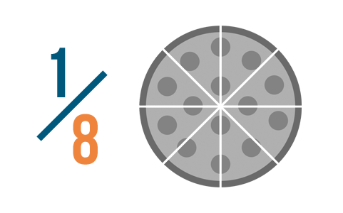
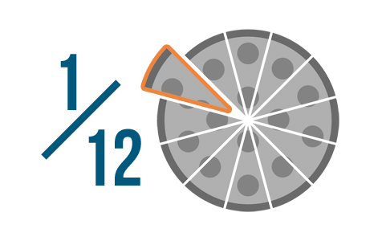
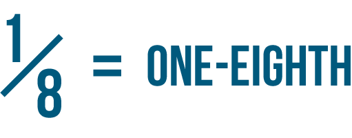
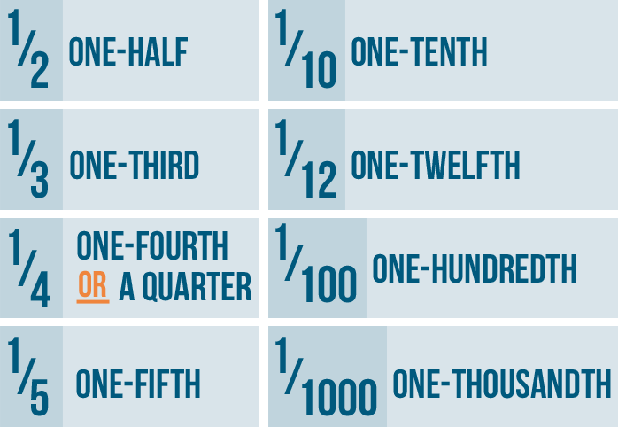
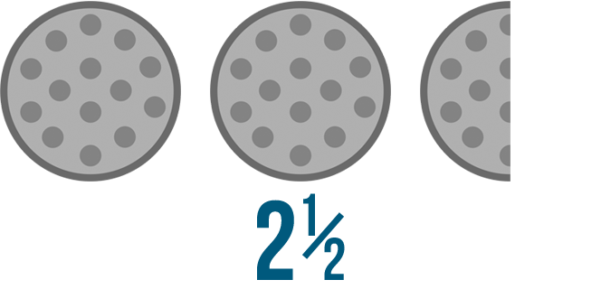
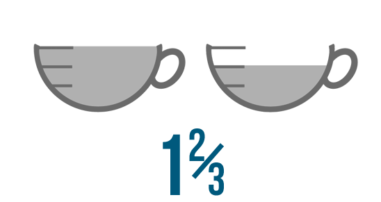
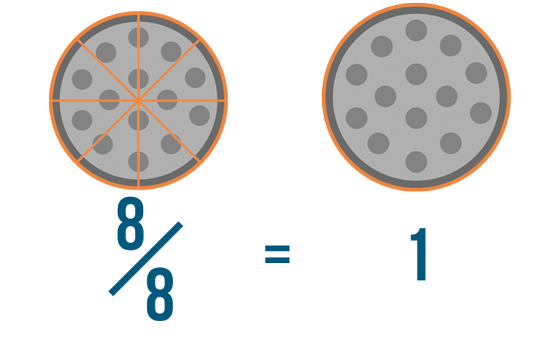
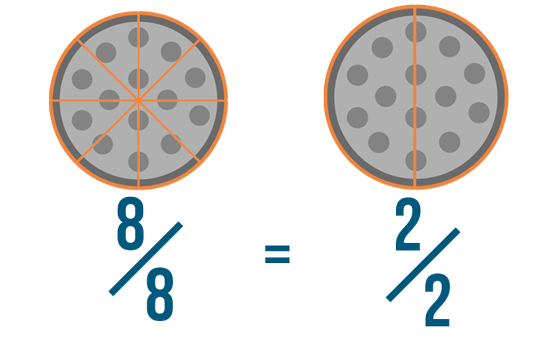

PART I: INTRODUCTION TO FRACTIONS
What are fractions?
A fraction is part of a whole.It's less than 1 whole thing, but more than 0. We use fractions all the time in real life. Have you ever ordered a quarter -pound burger? Or noticed that your gas tank is half full? Both of these are fractions of the whole amount—a whole pound of meat, or a whole tank of gas.
Fractions look a little like division expressions, but they aren't problems to be solved. They are a way of expressing an amount Like numbers, fractions tell you how much you have of something.
Click through the slideshow to learn how fractions work.
Writing fractions
Every fraction has two parts: a top number and a bottom number. In math terms, these are called the numerator and the denominator. Don't worry too much about remembering those names. As long as you remember what each number means, you can understand any fraction.
As you saw in the slideshow, the bottom number, or denominator, is the number of parts a whole is divided into. In our pizza example, we said each slice was 1/8 of the pizza. The denominator was 8, since the pizza was divided into 8 slices.
The top number, or numerator, refers to a certain number of those parts. It lets us know how much we're talking about. Since we're talking about one slice of pizza, our numerator is 1.
Let's look at another example. What if we divided the same pizza into 12 slices instead of 8? If we took one slice, that would be 1/12 of the pizza— 1 slice out of the 12 total slices. No matter what fraction you're trying to write, you always write it the same way—with the number of parts on the bottom, and the parts you're referring to on top. 
TRY THIS!
Write these images as fractions.
READING FRACTIONS
In the example above, if you had a pizza with eight slices, each slice would be 1/8 of the pizza. You'd read that like this: one-eighth.
When we read or talk about fractions, we use special numbers called ordinal numbers. A good way to remember this is that many of them are the same numbers you use when you're putting things in order: third, fourth, fifth, and so on.
You might know some of these numbers already. For example, when you tell your boss you'll be at work in half an hour, you're saying that you'll get there in third of a cup of sugar, you might know to hand her the measuring cup that says 1/3.
Here are some of the most commonly used fractions:
A good rule to remember is that most ordinal numbers end in "th." So, 1/20 is one-twentieth. 1/35 is one-thirty-fifth. 1/54 is one-fifty-fourth
What about fractions that don't have a 1 on top? Read these as if you were counting. So if 1/5 is one -fifth, then 2/5 is two- fifths, and 3/5 is three -fifths. The top number will always be a "normal" number like the ones you use to count, and the bottom number is always an ordinal number.
TRY THIS!
Write fractions to match the text.
Mixed numbers
Sometimes you might see a fraction next to a whole number. We call this a mixed number. Let's take a look at this example:
2 1/2 is a mixed number. If we say we have 2 1/2 pizzas, it means we have 2 whole pizzas and 1/2 of another pizza. You can read 2 1/2 like this: two-and-a-half.
Let's try another example. What if you pour 1 whole cup of tea, then fill only 2/3 of another cup? You could write that situation like this:
You'd read 1 2/3 like this: one and two-thirds. Remember, the whole number is always first.
TRY THIS!
Write the correct mixed number next to each picture.
WHOLE FRACTIONS
So far, you've learned that a fraction is a part of a whole. For example, 3/4 means you have three parts out of four parts total. But what if you had a fraction like this?
8/8
In this example, we have eight parts out of eight parts total. If the top number and the bottom number of a fraction are the same, then the fraction is equal to 1. That's because you have every part of the fraction, or one whole thing. This is sometimes known as a whole fraction.
So if you had eight slices of pizza out of eight total, you'd have one whole pizza.
Let's look at another example: 8/8 and 2/2 .While these fractions may look different, they're actually just two ways of saying the same thing. Because these are whole fractions, 8/8 and 2/2 are both equal to 1. And because they're both equal to 1, they're also equal to each other.
TRY THIS!
Write the correct whole fraction under each picture.
PART II: COMPARING AND REDUCING FRACTIONS
Comparing fractions
In Introduction to Fractions, we learned that fractions are a way of showing part of something. Fractions are useful, since they let us tell exactly how much we have of something. Some fractions are larger than others. For example, which is larger: 6/8 of a pizza or 7/8 of a pizza?
In this image, we can see that 7/8 is larger. The illustration makes it easy to compare these fractions. But how could we have done it without the pictures?
Click through the slideshow to learn how to compare fractions.
As you saw, if two or more fractions have the same denominator, you can compare them by looking at their numerators. As you can see below, 3/4 is larger than 1/4. The larger the numerator, the larger the fraction.

For example, which of these is larger: 2/3 or 1/5? It's difficult to tell just by looking at them. After all, 2 is larger than 1, but the denominators aren't the same.
If you look at the picture, though, the difference is clear: 2/3 is larger than 1/5. With an illustration, it was easy to compare these fractions, but how could we have done it without the picture?
Click through the slideshow to learn how to compare fractions with different denominators.

Reducing fractions
Which of these is larger: 4/8 or 1/2
If you did the math or even just looked at the picture, you might have been able to tell that they're equal. In other words, 4/8 and 1/2 mean the same thing, even though they're written differently.
If 4/8 means the same thing as 1/2, why not just call it that? One-half is easier to say than four-eighths, and for most people it's also easier to understand. After all, when you eat out with a friend, you split the bill in half, not in eighths.
If you write 4/8 as 1/2, you're reducing it. When we reduce a fraction, we're writing it in a simpler form. Reduced fractions are always equal to the original fraction.
We already reduced 4/8 to 1/2. If you look at the examples below, you can see that other numbers can be reduced to 1/2 as well. These fractions are all equal.
5/10 = 1/2
11/22 = 1/2
36/72 = 1/2
These fractions have all been reduced to a simpler form as well.
4/12 = 1/3
14/21 = 2/3
35/50 = 7/10
Irreducible fractions
Not all fractions can be reduced. Some are already as simple as they can be. For example, you can't reduce 1/2 because there's no number other than 1 that both 1 and 2 can be divided by. (For that reason, you can't reduce any fraction that has a numerator of 1.)
Some fractions that have larger numbers can't be reduced either. For instance, 17/36 can't be reduced because there's no number that both 17 and 36 can be divided by. If you can't find any common multiples for the numbers in a fraction, chances are it's irreducible.
Try This!
Reduce each fraction to its simplest form.